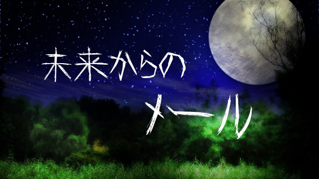

皆さんの携帯電話には、未来からのメールが届いたことはありますか？
なんのこっちゃという人もいるでしょう。
要するに、受信したメールを見てみると、受信時刻がその時点よりも後の時間や日付けになっているという…。
例えば、受信したメールの表示を見ると９／１７の２１時だとします。で、ふと時計に目をやると、まだ２０時５０分（汗）
みたいな、コワ～イ現象です。
「そんなバカな」
と思われる方、これは実話なんです。
実際に私が体験したのですから。
初めて経験したのは、カラオケに行くために、夜の駅周辺で待ち合わせをしたときです。
待ち合わせ時刻が２２時で、ほぼジャストの時刻で到着するようなペースで駅へ向かって歩いていました。
そしてあと５分前というところで友人からメールが届き、見てみると…
「着きました」とのこと。
しかしそのメール表示を見てみると
‘２２時０１分’
「ええ～！」と思わず叫びそうになりましたよ。
夜の静けさも手伝い、背筋がゾ～っとしたものです。
さて、そろそろ種明かしといきましょう。
実は意外と単純だったのです。
単にその友人のケイタイの時刻設定が６分ほど進んでいたのです。
どうやら、メールの受信時刻表示というのは、送った側の本体（携帯電話やパソコン）のメール送信時刻が表示されるというのです。
ですから、相手側の設定によっては、数年後や数年前からメールが届くという怪現象も起こりうるわけですね。
そして、メール受信した側では、その表示日時時刻順によってメールがソート（規則によって並べること）されますから、例えば１年後の日付けからメールがきたら、以降１年間は、どんなにいろんな人からメールが来たとしても、その１年後からのメールがいつも一番上に表示される
ようです。
実際、これを利用した迷惑メールもあるみたいですね。
削除しない限り一番上に表示されるので目立つ！みたいな。
いやあ、からくりが解ってしまえば何てことはないですが、もしまったく知らず、しかも未来からのメール内容が、運命を示唆するようなものだと完全にホラーですな。
さて、なぜこのような出来事を思い出したかというと、つい最近に携帯電話をテーマとしたホラー映画を見たからです。
いまさらなぜ…と突っ込みがきそうなので先に言います。
本当は、急に松たか子さんのドラマが見たくなって（アナ雪の影響でしょうかね…）、ＤＶＤレンタル屋さんに行ったのですが、なぜかロンバケやラブジェネがない（涙）。
誰も知らないようなマイナーなドラマはいっぱいあるのに…なぜ！
で、何も借りないのはちょっと、ということで仕方なく、そのホラー映画を借りたのでした。
でも、それは映画ではなくドラマバージョンで、少しパロディ的な要素もあって全然怖くありませんでしたが。
次は希望のドラマをちゃんと見つけたいと思います。